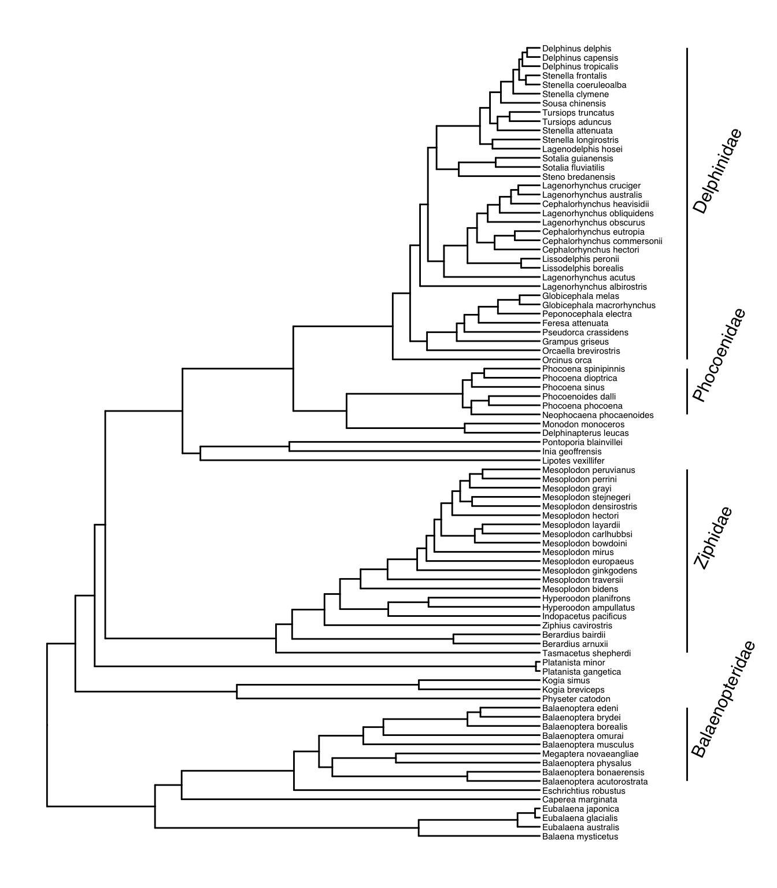
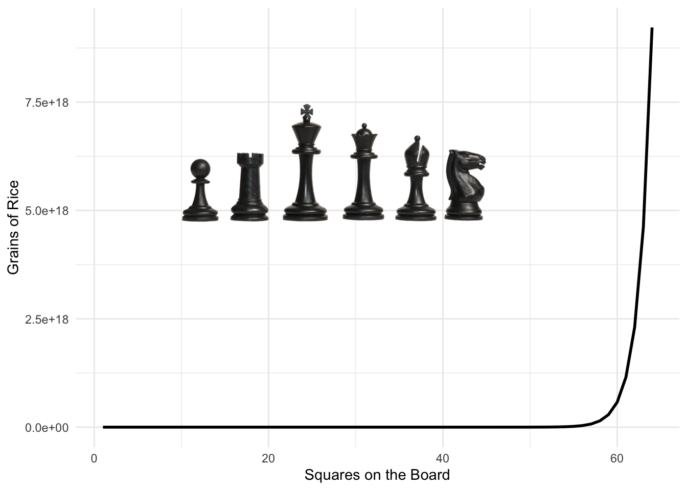
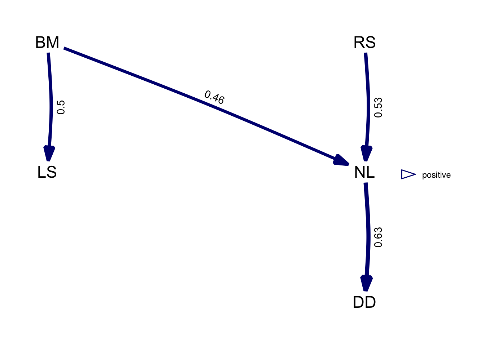

Chapter 7 Example Phylogeny
Let's now have a look at how we can include images on our plots. Using images is a great way to annotate a phylogeny. Here's the kind of thing I mean.

This phylogeny is annotated in a number of useful ways. The tip labels are the most common type you probably recognise and in this case, describe cephalopod families. The superorders (octopodiformes and decapodiformes) are highlighted by gold and red rectangles as well as a bar across the tips.
The most interesting thing for our purposes are the silhouettes at the root of each superorder. The octopodiformes have an octopus and the decapodiformes have a squid as example taxa from within the superorder.
7.1 Phylopic
The silhouettes I used for that plot are from a website (http://phylopic.org/). Phylopic provides open source biological silhouettes that are free to use. We're now going to look at how to do this.
Let's start with loading an example tree. This one is a primate tree courtesy of Randi Griffin. You'll notice that I'm loading this tree using a url. This is because I'm loading a file directly from GitHub, a sort of social network of coding and the host of this site! Randi (and many other coders) make some of the things they produce freely available through GitHub. This can be data, files or code.
primates <- read.nexus("https://raw.githubusercontent.com/rgriff23/Dissertation/master/Chapter_2/data/tree.nex")Let's plot the new tree first.
p1 <- ggtree(primates)
p1
Let's use what we know about ggtree to customise this plot into something more useful. In particular, this plot is quite useful because it tells us the numbers of each node and we will need that later on.
p2 <- ggtree(primates) +
xlim(0,90) +
geom_tiplab(size=1.5) +
geom_label2(aes(subset=!isTip, label=node), size=2, color="darkred", alpha=0.5)
p2
Let's label the 6 primate superfamilies.
p3 <- ggtree(primates) +
xlim(0,100) +
geom_tiplab(size=1.5, offset=0.5) +
geom_hilight(node=124, fill="steelblue", alpha=0.5) +
geom_hilight(node=113, fill="darkgreen", alpha=0.5) +
geom_hilight(node=110, fill="gray", alpha=0.5) +
geom_hilight(node=96, fill="pink", alpha=0.5) +
geom_hilight(node=89, fill="beige", alpha=0.5) +
geom_hilight(node=70, fill="yellow", alpha=0.5)
p3
So far so good. Let's add on bars like I did for the cephalopod version. This time, I'll add the new details to the object p3 to save some typing.
p4 <- p3 +
geom_cladelabel(124, "Galagoidea", offset=15, barsize=2, angle=90,
offset.text=1.5, hjust=0.5, fontsize=3) +
geom_cladelabel(113, "Lemuroidea", offset=15, barsize=2, angle=90,
offset.text=1.5, hjust=0.5, fontsize=3) +
geom_cladelabel(110, "Tarsioidea", offset=15, barsize=2, angle=75,
offset.text=2.5, hjust=0.2, fontsize=2) +
geom_cladelabel(96, "Ceboidea", offset=15, barsize=2, angle=90,
offset.text=1.5, hjust=0.5, fontsize=3) +
geom_cladelabel(89, "Hominoidea", offset=15, barsize=2, angle=90,
offset.text=1.5, hjust=0.5, fontsize=3) +
geom_cladelabel(70, "Cercopithecoidea", offset=15, barsize=2, angle=90,
offset.text=1.5, hjust=0.5, fontsize=3)
p4
There are some helpful details here, such as the fact that the label for Tarsioidea is off at an angle to avoid overlapping with other labels. The extra arguments in these options demonstrate how much control you can exercise over each geom.
Now let's get to adding images. the way to do this is a little awkward with ggtree but I think it's worth the hassle. The first thing we have to do is gather the links for each image we want to use. I've chosen to do this by building a small data frame containing the urls to the images on phylopic, the names of the super families I want to label and the nodes I want to plot the images on.
images <- data.frame(node = c(124,113,110,96,89,70),
phylopic = c("http://phylopic.org/assets/images/submissions/
7fb9bea8-e758-4986-afb2-95a2c3bf983d.512.png",
"http://phylopic.org/assets/images/submissions/
bac25f49-97a4-4aec-beb6-f542158ebd23.512.png",
"http://phylopic.org/assets/images/submissions/
f598fb39-facf-43ea-a576-1861304b2fe4.512.png",
"http://phylopic.org/assets/images/submissions/
aceb287d-84cf-46f1-868c-4797c4ac54a8.512.png",
"http://phylopic.org/assets/images/submissions/
0174801d-15a6-4668-bfe0-4c421fbe51e8.512.png",
"http://phylopic.org/assets/images/submissions/
72f2f854-f3cd-4666-887c-35d5c256ab0f.512.png"),
species = c("Galagoidea","Lemuroidea","Tarsioidea",
"Ceboidea","Hominoidea","Cercopithecoidea"))This is a way of plotting them all at once with all the code included to build the plot from scratch.
p5 <- ggtree(primates) +
xlim(0,110) +
geom_tiplab(size=2, offset=0.5) +
geom_hilight(node=124, fill="steelblue", alpha=0.5) +
geom_hilight(node=113, fill="darkgreen", alpha=0.5) +
geom_hilight(node=110, fill="gray", alpha=0.5) +
geom_hilight(node=96, fill="pink", alpha=0.5) +
geom_hilight(node=89, fill="beige", alpha=0.5) +
geom_hilight(node=70, fill="yellow", alpha=0.5) +
geom_cladelabel(124, "Galagoidea", offset=22, barsize=2, angle=90,
offset.text=1.5, hjust=0.5, fontsize=5) +
geom_cladelabel(113, "Lemuroidea", offset=22, barsize=2, angle=90,
offset.text=1.5, hjust=0.5, fontsize=5) +
geom_cladelabel(110, "Tarsioidea", offset=22, barsize=2, angle=75,
offset.text=2.5, hjust=0.2, fontsize=4) +
geom_cladelabel(96, "Ceboidea", offset=22, barsize=2, angle=90,
offset.text=1.5, hjust=0.5, fontsize=5) +
geom_cladelabel(89, "Hominoidea", offset=22, barsize=2, angle=90,
offset.text=1.5, hjust=0.5, fontsize=5) +
geom_cladelabel(70, "Cercopithecoidea", offset=22, barsize=2, angle=90,
offset.text=1.5, hjust=0.5, fontsize=5)
p5 %<+% images +
geom_nodelab(aes(image = phylopic), geom = "image",
size = .04, nudge_x = -4)
Xie, Yihui. 2015. Dynamic Documents with R and Knitr. 2nd ed. Boca Raton, Florida: Chapman; Hall/CRC. http://yihui.name/knitr/.
———. 2020. Bookdown: Authoring Books and Technical Documents with R Markdown. https://CRAN.R-project.org/package=bookdown.